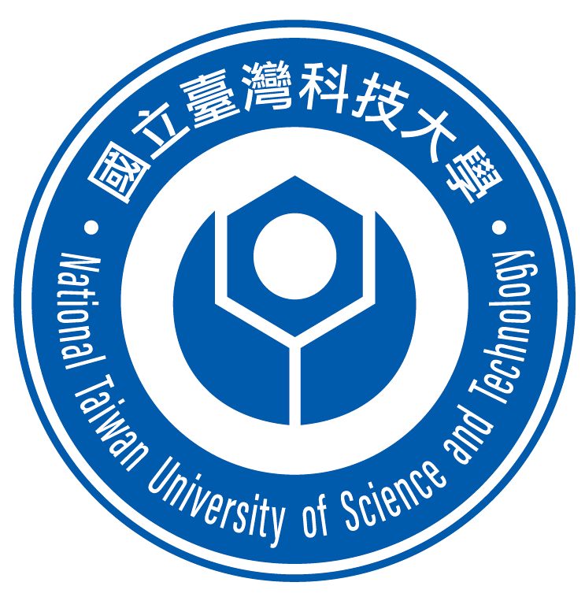
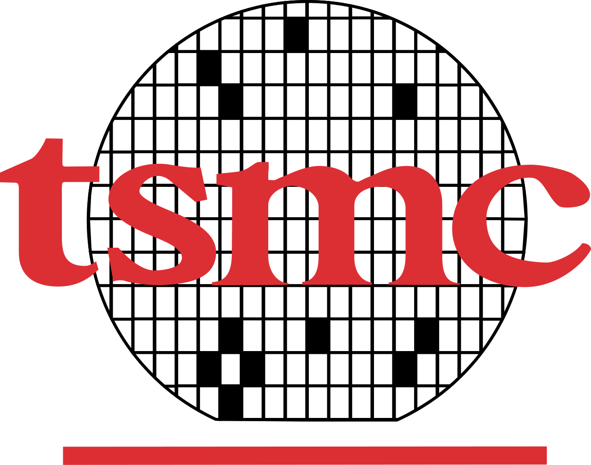

就讀中
國立臺灣科技大學
資訊管理研究所
SELECTED WORKS
Chen-An, Chuang
輕觸任意位置，開始探索
Professional Summary
我目前就讀國立臺灣科技大學資訊管理研究所，具備 SAP ERP 導入、數位轉型、LLM 應用、 AI 影像辨識與資安風險管理的實務經驗。我結合企業系統、專案管理與開發，讓系統能實際導入與維運。 近期聚焦於 RAG、MCP 工具調用與領域型 AI 系統，以及兼顧資料安全與治理的主權 AI 架構。
Core Skills
Education
Experience

參與 SAP 整合服務現代化、AI 工具開發、介面自動化驗證與企業流程優化。

參與企業數位轉型相關工作，聚焦技術導入、流程改善與實務場景中的應用落地。
擔任兒童程式設計教師，以循序漸進的課程與創意專案，引導學生理解邏輯思維與程式設計基礎。

參與 SAP 顧問相關任務，累積 ERP 模組學習、系統導入與企業情境支援經驗。

支援總公司 IT 部門作業，理解零售總部環境中企業技術團隊的系統維運與服務支援模式。

協助公部門資訊業務，接觸政府服務流程中的系統運作、資訊支援與行政場景需求。

完成 SAP 多模組訓練後，擔任 FI 與 ABAP 模組講師，教授 SAP 財務會計與 ABAP 程式設計。
Selected Projects
團隊檢索機器人視覺與觸覺融合技術，分析 1,175 個專利家族，比對五類觸覺感測技術在抓取、安全與照護上的布局。
針對金屬中心（MIRDC）的題目，建議優先發展用於照護抓取的光學觸覺感測。
JUST RESULT｜2026 年產業專利分析與布局競賽第一名
升級 Spring Boot 後端，串接 MCP 與 Spring AI，將 SAP 查詢封裝為 4 項工具。以 ABAP 自動化測試逐欄比對標準與客製介面，驗證 7 組介面。
完成 Business Partner 主檔異動追蹤 Enhancement，改用 SAP 標準變更紀錄，提高異動擷取完整性。透過共用開發手冊，新 AI 工具開發效率提升約 70%。
為地政士開發全地端法規問答系統，透過 MCP 檢索土地法等法規，回答時附上可核對的法條。
以第一作者身分發表的研究獲 2026 中國工業工程學會年會暨學術研討會（CIIE 2026）最佳論文獎。
論文：〈具引用驗證與結構性護欄之 Agentic 法律問答系統：以都市更新法規為例〉
2026/11–2027/10，已核定
負責全地端都市更新與土地法規諮詢平台的研究方法撰寫，規劃 Agentic AI、GraphRAG 與 MCP 混合架構，並設計推論前的強制檢索護欄。
設計三組對照實驗，涵蓋檢索效能、法律推理與產業部署，納入量化指標及專家與實務工作者的前後測。擔任專案 PM，統籌產學簽約、經費規劃與合約文件。
擔任專題組長，整合 YOLOv5、OpenPose 與 PID 飛行控制，讓無人機能辨識搜救目標並規劃運輸路線。
獲資管系畢業專題發表第二名、桃園青創力學生創業競賽優選，以及花蓮青年鏈結地方產業專題競賽行動獎勵金。
擔任開發者，使用 Lemonade SDK 與 AI Agent 開發水果品質分類 API，串接至 n8n 自動化流程，並採用 Docker 容器化架構，支援全地端部署。
獲 AMD Lemonade SDK 與 AI Agent 專題競賽第一名。
擔任專案經理，負責 SAP IMG 的企業架構、使用者權限與財務設定。
以 ABAP 和 Python 自動化流程，依客製碳係數計算產品碳足跡。團隊獲結案競賽第二名。
代表東華 ERP 學生團隊與韓國仁荷大學進行學術交流。
以外語討論資料分析如何支援商業決策及系統優化，並將成果整理成專案報告。
統籌 2024 國立東華大學資訊管理學系畢業專題暨大學社會責任實踐（USR）－洄瀾共好計畫成果發表會，協調活動時程、人力與成果展示。
為東華駕訓班製作 LINE 自動回覆機器人與 Unity 駕駛模擬器，協助學員準備駕照考試。
另實作演唱會訂票資料庫原型。
Achievements
以具引用驗證與結構性護欄的 Agentic 法律問答系統研究獲獎。
第一名｜JUST RESULT 團隊，以機器人感知融合技術為主題。
以水果品質分類 API 與 n8n 流程整合獲第一名。
CERPS SAP S/4HANA 企業資源規劃軟體應用師證照。
Aerial Vision 專案獲得優選。
搜救無人機專案入選前十名，獲行動獎勵金補助。
Leadership